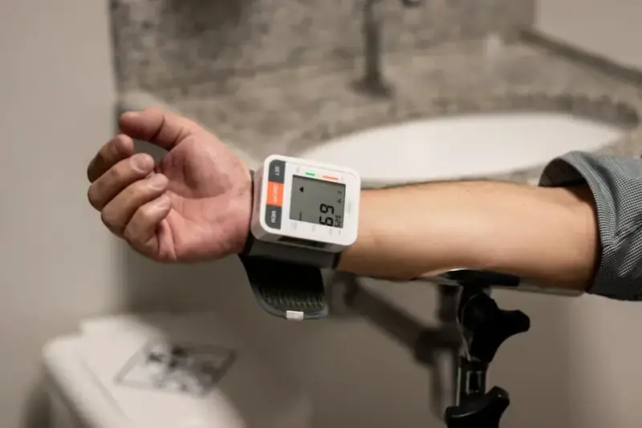

Jantung & Pembuluh DarahPoli Jantung
Pemeriksaan dan terapi penyakit jantung koroner, hipertensi, gagal jantung, dan gangguan irama jantung oleh kardiolog berpengalaman.
- IGD Jantung 24 Jam
- Diagnostik Canggih
Temukan unit layanan spesialis kami yang dilengkapi fasilitas modern dan tenaga medis berpengalaman.

Jantung & Pembuluh DarahPemeriksaan dan terapi penyakit jantung koroner, hipertensi, gagal jantung, dan gangguan irama jantung oleh kardiolog berpengalaman.
 Otak & Sistem Saraf
Otak & Sistem Saraf
Penanganan stroke, epilepsi, vertigo, migrain, dan nyeri saraf dengan dukungan CT scan, MRI, dan EEG.
 Tulang & Sendi
Tulang & Sendi
Layanan cedera olahraga, patah tulang, nyeri punggung, dan penggantian sendi dengan rehabilitasi pascatindakan.
 Kesehatan Anak
Kesehatan Anak
Imunisasi, tumbuh kembang, gizi anak, dan perawatan anak sakit dalam ruangan yang ramah dan nyaman.
Pemeriksaan darah, urin, dan kimia klinik dengan peralatan otomatis, hasil cepat, dan akurasi terjaga.
Dokter jaga, perawat terlatih, dan ambulans siaga menangani kasus gawat darurat dan trauma setiap saat.